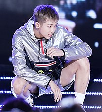

Kim Nam-joon (Korean: 김남준; born September 12, 1994), better known by his stage name RM (formerly Rap Monster), is a South Korean rapper, songwriter, and record producer. He is the leader of the South Korean boy group BTS. In 2015, he released his first solo mixtape, RM. In October 2018, his second mixtape, Mono, was the highest charting album by a Korean soloist on the Billboard 200 chart, having peaked at 26. He has recorded with artists such as Wale, Younha, Warren G, Gaeko, Krizz Kaliko, MFBTY, Fall Out Boy, Primary, and Lil Nas X.
Kim Nam-joon (Korean: 김남준) was born on September 12, 1994, in Dongjak-gu, South Korea, and grew up in Ilsan-gu, where his family moved when he was four or five. He is the elder of two siblings and has a younger sister.
As a child, RM largely learned English through watching Friends with his mother. As a student, he actively wrote poetry and often received awards for his writings. He posted his work to an online poetry website for roughly one year, where he received moderate attention. Through this, RM grew interested in pursuing a literary career but decided against it. At the age of 11, RM became interested in hip-hop music after hearing Epik High's "Fly" in fifth grade. In 2007, as a first year middle school student, RM began rapping in local amateur hip-hop circles, creating his first self-composed recording for the first time using the program Adobe Audition (then called Cool Edit). He later participated in his first concert in 2008. RM eventually became more active in the underground Korean hip-hop scene under the moniker "Runch Randa", releasing a number of tracks and collaborations with other underground rappers, such as Zico.
In school, RM scored in the top 1% of the nation in the university entrance examinations for language, math, foreign language and social studies and had an IQ of 148. RM's parents were strongly opposed to his interest in a musical career due to his academic achievements, and initially RM decided to set music aside to focus on his studies. In order to convince his mother to allow him to be a rapper, he asked her if "she wanted to have a son who was a first-place rapper, or a 5,000th-place student".
RM selected the name "Rap Monster" during his time as an idol trainee. Though commonly misunderstood that the name means that he "raps like a monster", it actually derives from the lyrics of a song he wrote, inspired by San E's "Rap Genius". The lyrics contained a segment where San E declares he should be called a "rap monster" as he "raps non-stop". He adopted the stage name because he felt it was "cool". RM has described himself as having a love-hate relationship with the name, feeling that it was not selected for being of "incredible value" to him. He formally changed his stage name to "RM" in November 2017, as he determined that "Rap Monster" was no longer representative of who he was or the music that he creates. In an interview with Entertainment Tonight RM stated that "the name could symbolize many things. It could have more spectrums to it." "Real Me" was provided as a possible current meaning.
In 2009, RM auditioned for Big Deal Records, passing the first round along with Samuel Seo but failing the second round as he forgot all his lyrics. However, following the audition, rapper Sleepy exchanged contact information with RM, who he later mentioned to Big Hit Entertainment producer Pdogg. In 2010, Sleepy contacted RM, encouraging him to audition for Big Hit CEO Bang Si-hyuk. Bang offered RM a spot at the record label, and, without his parents knowledge, RM accepted the offer immediately. The interaction caused Bang and Pdogg to start production of a hip hop group, which eventually became idol group BTS. RM joined Big Hit Entertainment shortly after at age 16. During his career as an idol, he enrolled at Global Cyber University. RM trained for three years with fellow rapper Min Yoon-gi and dancer Jung Ho-seok, who later became known as Suga and J-Hope respectively. During his three-year trainee period, RM performed on five pre-debut tracks credited to BTS in 2010 and 2011. He also worked as a songwriter for girl group Glam and helped pen their debut single, "Party (XXO)", an explicitly pro-LGBTQ song which was praised by Billboard as "one of the most forward-thinking songs out of a K-pop girl group in the past decade." On June 13, 2013, RM made his debut with BTS, and has since produced and written lyrics for a variety of tracks on all of BTS' albums. On August 29, 2013, RM performed the intro track to BTS' first extended play O!RUL8,2?, which was released as a trailer ahead of the EP's September 11 release and marked his first solo released collectively as "BTS".
 RM is a baritone. In 2017, American hip-hop magazine XXL included him in its list of "10 Korean Rappers You Should Know", with writer Peter A. Berry stating that "Rap Monster rarely fails to live up to his name". Berry described RM as "one of the region's most dexterous rappers, capable of switching flows effortlessly as he glides across an array of diverse instrumentals". Crystal Tai of the South China Morning Post noted that RM has "received much praise for his natural flow and lyrics". Speaking about RM's work, Noisey's Bianca Mendez wrote that "he's got some My Beautiful Dark Twisted Fantasy (by Kanye West)in him, but he's closer to...Earl Sweatshirt and Chance the Rapper in spirit, and that's exciting". In January 2020, he was promoted from associate to a full member of the Korea Music Copyright Association.
In a survey conducted by Gallup Korea, RM ranked as the 12th most preferred idol of the year for 2018. He ranked 11th in 2019. In 2018, RM was awarded the fifth-class Hwagwan Order of Cultural Merit by the President of South Korea along with the other members of BTS, for his contributions to Korean culture. In December 2020, the Arts Council of Korea named him one of its ten 2020 Patrons of the Arts, in recognition of his donation of 100 million won to the National Museum of Modern and Contemporary Art for the printing and distribution of various rare art books to schools and libraries in rural and mountainous regions.